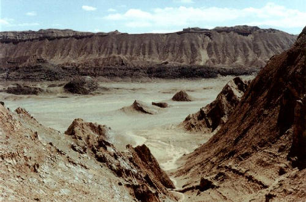
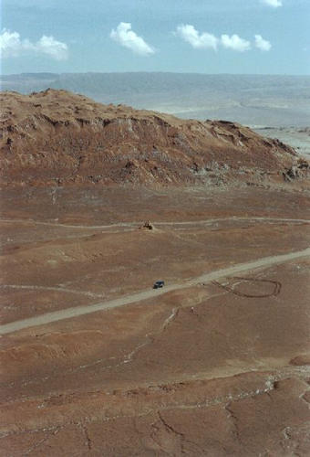
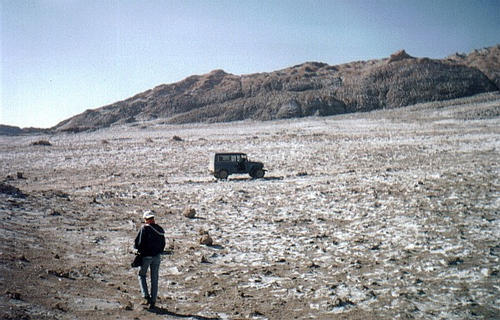
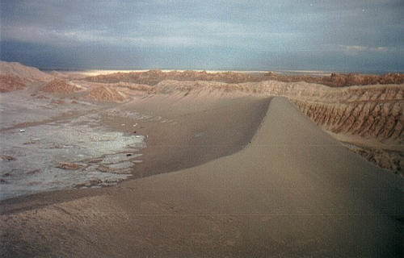
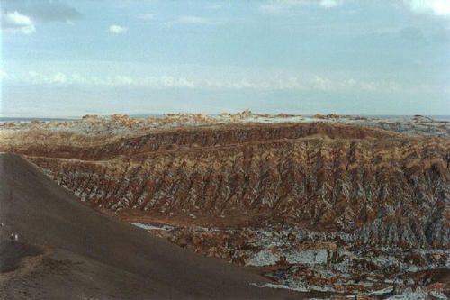
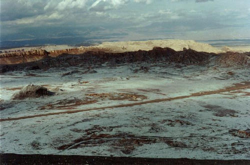
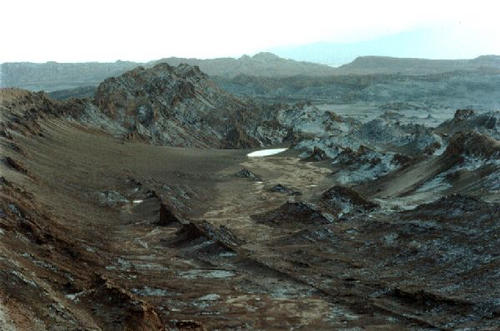

E aqui, uma coletânea no melhor lugar do deserto, o Vale da Lua.
É pertinho de San Pedro, com disposição dá pra ir até a pé. É um trecho com areia, sal, pedras, dunas e montanhas, mas a combinação de tudo isso foi feita de maneira muito especial, produzindo paisagens espetaculares, daquelas que você para e fica olhando e tem vontade de passar o resto da vida ali, estático.
São cores e formas que dificilmente saem da sua mente, é realmente um lugar muito especial.

Panorâmica de um trecho do vale
Local: Vale da Lua - CHILE - 2001
Num canto qualquer, você pára, sobe uma montanha e aprecia a paisagem, que se perde no horizonte.

Uma Toyota, uma cara de camiseta branca e o nada
Local: Vale da Lua - CHILE - 2001
Pegando a estradinha que dá a volta no vale, tem uma entradinha com uma estrada(?!?) bem acidentada, que leva a um lugar diferente, ali do lado. Aqui é assim, você olha um pouco para o lado e já vê uma paisagem completamente diferente. São vários "mundos" grudados que você visita de uma só vez.
Esse branco no chão é sal, não é neve não! O sal se agrupa com outros sais formando cristais, que brilham com o sol, muito bonito de se ver. Ah! Falando em sal, quando for comer em algum lugar dessa região, não precisa ficar batendo no fundo do saleiro, pois a umidade do ar lá é muito baixa e o sal não gruda :)

Chão coberto de sal
Local: Vale da Lua - CHILE - 2000
Essa foto foi tirada do alto de uma das montanhas. Tem essa duna gigante que usamos pra subir na montanha. Aqueles pontinhos pretos na crista da duna são pessoas vindo e aqueles outros pontos um pouco maiores, lá embaixo são carros (vans e caminhonetes). Conseguiu imaginar o tamanho dessa parada? Muito massa.
Ah! Se for lá, experimente descer essa duna correndo no gás mesmo. É MUITO massa, se tentar parar se empacota. Isso já virou tradição e fizemos nos dois anos :)

A duna que domina o local
Local: Vale da Lua - CHILE - 2000
E agora imagens que falam por si, todas em locais bem próximos, tiradas de um mesmo ponto em cima de uma montanha, apenas virando o torso para outra direção. É, tudo isso aí faz parte de uma mesma paisagem, ao alcance da vista e dos pés. É viajante.


 Local: Vale da Lua - CHILE - 2001